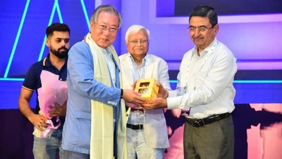
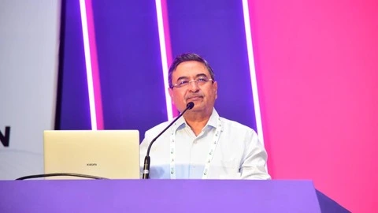
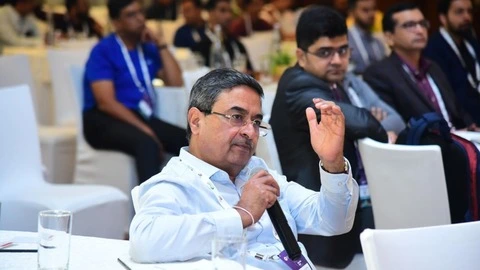
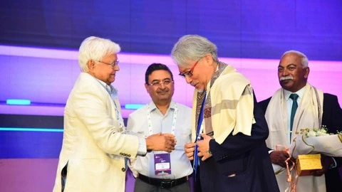
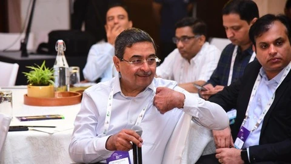
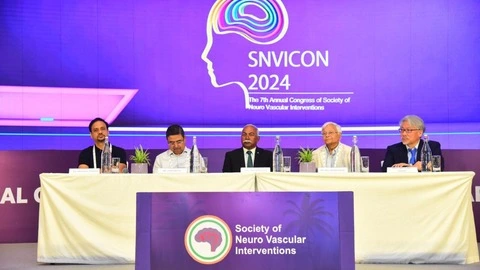
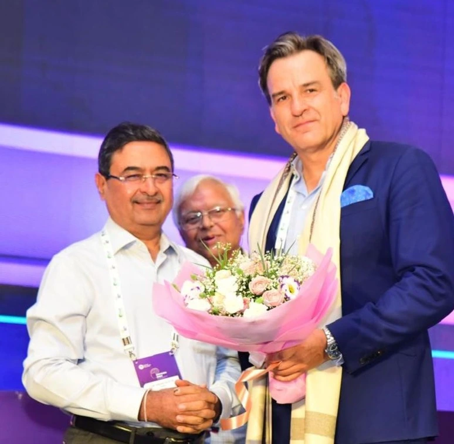

Trusted Brain & Spine Specialist in Delhi NCR
Providing comprehensive care for complex neurological and vascular disorders with compassion and unparalleled expertise.










My Philosophy of Care
With over 30 years of clinical practice, currently serving as a senior consultant neurosurgeon at Kailash Deepak Hospital, Karkardooma, Delhi, I am deeply committed to approaching every neurological condition with precision and integrity. My guiding principle is to integrate leading-edge treatment with a patient-centred, ethically grounded approach, tailoring every intervention to support the best possible recovery and quality of life.
Dual Mastery in Microsurgical and Endovascular Techniques
Refined microsurgery and catheter-based endovascular methods enable a holistic spectrum of support, from delicate brain and spinal surgeries to minimally invasive vascular interventions.
Focused on High-Complexity Neurological Disorders
Long-standing focus on aneurysms, AVMs, brain tumours, spinal disorders, trigeminal neuralgia, and stroke through advanced surgical and vascular procedures.
Internationally Aligned Clinical Standards
Training in interventional neuroradiology (FINR) and wide experience help ensure solutions that follow trusted global standards.
Active Membership in Renowned Medical Societies
Affiliations with major organisations, including NSI, AANS, CNS (USA), WFITN, ISCVS, and WSO, support safe, reliable, and globally guided care for patients.
From Dr. Gupta's Desk
Informative videos from Dr. Gupta on various neurosurgical conditions and treatments.
Treatments Offered
Delivering advanced neurosurgical solutions for complex brain and spine conditions.
Carotid Artery Stenting
A minimally invasive procedure that places a small mesh tube in a narrowed carotid artery to restore blood flow and reduce the risk of stroke.
Craniotomy Surgery
Involves temporarily removing a section of the skull to access the brain for treating tumours, bleeding, injuries, or other neurological conditions safely.
Deep Brain Stimulation (DBS)
Surgical treatment that uses implanted electrodes to deliver controlled electrical signals to specific brain areas, helping manage movement disorders.
Embolisation
A minimally invasive procedure that blocks abnormal blood vessels to treat tumours, aneurysms, bleeding, or vascular malformations.
Endoscopic Pituitary Surgery
Minimally invasive approach through the nose to remove pituitary tumours with minimal discomfort and faster recovery.
Microvascular Decompression (MVD)
Surgical relief for trigeminal neuralgia and hemifacial spasm by separating blood vessels from sensitive nerves.
Thrombectomy for Stroke
Emergency procedure to remove blood clots from brain arteries, significantly improving outcomes in acute ischemic stroke.
Cervical Disc Replacement
Artificial disc replacement surgery to treat damaged cervical discs while preserving neck movement and flexibility.
Spinal Fixation Surgery
Stabilization of the spine using implants and bone graft to treat spinal instability, deformities, and injuries.
Conditions We Treat
Comprehensive care for a wide range of neurological and spinal conditions.
Stroke
Emergency care and rehabilitation for ischemic and hemorrhagic stroke patients.
Brain Tumor
Diagnosis and surgical treatment for benign and malignant brain tumours.
Brain Hemorrhage
Emergency surgical intervention for bleeding in or around the brain.
Brain AVM
Treatment for arteriovenous malformations affecting brain blood vessels.
Brain Aneurysm
Endovascular and surgical treatment for bulging blood vessels in the brain.
Pituitary Tumors
Endoscopic removal of pituitary adenomas through minimally invasive approaches.
Trigeminal Neuralgia
MVD surgery and other treatments for severe facial pain conditions.
Hydrocephalus
VP shunt surgery and ETV procedures for fluid accumulation in the brain.
Spinal Disc Problems
Herniated discs, degenerative disc disease, and disc bulge treatments.
Spinal Injury
Surgical stabilization and rehabilitation for traumatic spinal injuries.
Cervical Spondylosis
Neck pain and spinal cord compression treatment in the cervical spine.
Alzheimer's Disease
Specialized care and management for memory disorders and dementia.
Affordable Healthcare
Transparent pricing for quality neurosurgical care. Costs vary based on condition and treatment complexity.
Brain Tumor Surgery
AvailableComplete treatment including surgery, hospital stay, and follow-up care.
Get Cost EstimateBrain Aneurysm Treatment
AvailableEndovascular coiling or surgical clipping with comprehensive care.
Get Cost EstimateCervical Disc Replacement
AvailableArtificial disc surgery with premium implants and rehabilitation.
Get Cost EstimateMicrovascular Decompression
AvailableSurgical treatment for trigeminal neuralgia with high success rates.
Get Cost EstimatePatient Stories
Real experiences from patients who received exceptional care and achieved positive outcomes.
"Dr. Vikas Gupta is a miracle worker. My husband had a complex brain tumor, and every other doctor gave up. Dr. Gupta's expertise and calm demeanor gave us hope. Today, he is back to work and completely healthy."
"I was suffering from severe chronic back pain for years. Dr. Gupta performed a minimally invasive spine surgery, and I was on my feet within 24 hours. The relief was instant. Truly the best neurosurgeon."
"Excellent experience with Dr. Vikas Gupta for my stroke treatment. His quick response and advanced intervention saved me from permanent disability. Highly recommend him for any neuro-related issues."
Frequently Asked Questions
Find answers to common questions about neurological treatments and procedures.
You should consult a neurosurgeon if you experience persistent headaches, seizures, vision changes, weakness in limbs, numbness, balance problems, or have been referred by your primary doctor for a neurological condition.
Recovery varies based on the type of surgery. minimally invasive procedures may require 2-4 weeks, while complex surgeries may need 3-6 months of recovery. Your doctor will provide a personalized recovery plan.
With modern techniques like microsurgery and image guidance, brain tumor surgery has become much safer. Dr. Gupta uses advanced technology to minimize risks and maximize positive outcomes.
Remember BE-FAST: Balance loss, Eye vision problems, Face drooping, Arm weakness, Speech difficulty, Time to call emergency. Immediate medical attention is crucial for stroke treatment.
Yes, we offer telemedicine consultations for follow-up patients and initial assessments when appropriate. Contact us to schedule a virtual appointment.
We accept most major insurance providers. Please contact our office with your insurance details to verify coverage for your specific treatment.
Highlights & Achievements
Stay updated with Dr. Gupta's contributions to neurosurgery and medical education.
NEUROVASCON 2022, AIIMS Raipur
Speaking at the 22nd Annual Conference of the Cerebrovascular Society of India on latest cerebrovascular techniques.
Medical Education & Training
Participating in scientific programs and seminars to stay at the forefront of neurosurgical advancements.
International Conference Participation
Active member of NSI, AANS, CNS (USA), WFITN, ISCVS, and WSO - contributing to global neurosurgical knowledge.
Get in Touch
Available at multiple locations across Delhi and NCR. Schedule a consultation with Dr. Vikas Gupta.
Primary Hospital
Kailash Deepak Hospital, Karkardooma, Delhi
Call for Appointment
+91 99686 61522
+91 98103 44026
Email Address
drvikasneuro@gmail.com
OPD Timings
Mon - Sat: 10:00 AM - 6:00 PM